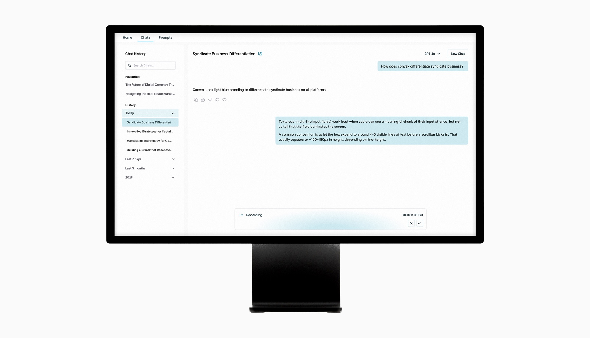
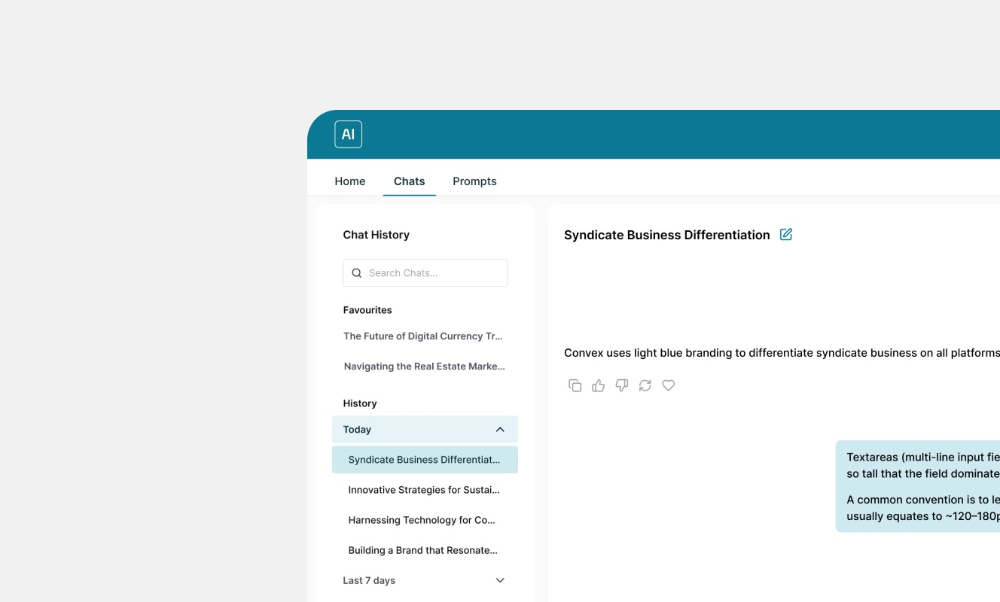

Building a Smarter, More Connected Workplace AI Assistant
Transforming internal productivity through enterprise-grade security, personalisation, accessibility and deep tool integration.

My Role
Product Designer
Focus
- Personalisation and knowledge retention
- Deep tool integration
- Enterprise-grade security
- Accessibility
Product Strategy
This product represents a significant step forward in our client's digital strategy. By combining personalisation, deep tool integration, and enterprise-grade security, it addresses the real-world needs of a modern insurance business — empowering employees to work faster, smarter, and with greater confidence in the tools they use.

Retaining organisational knowledge
Users can easily revisit past interactions and build on previous work, with prior conversations grouped by time.
This setup helps the organisation retain knowledge, cutting down on repeated questions and the need to reconstruct context.
Research and Discovery
I conducted stakeholder interviews with underwriters and product managers to understand their workflows, pain points, and needs during high-pressure renewal periods.
Key insights that shaped the design
- Navigation must be instantaneous and mirror the document's natural flow
- Users question AI accuracy — the design should communicate transparency and verifiable sources
- AI assistance should feel like productive work, not extra overhead